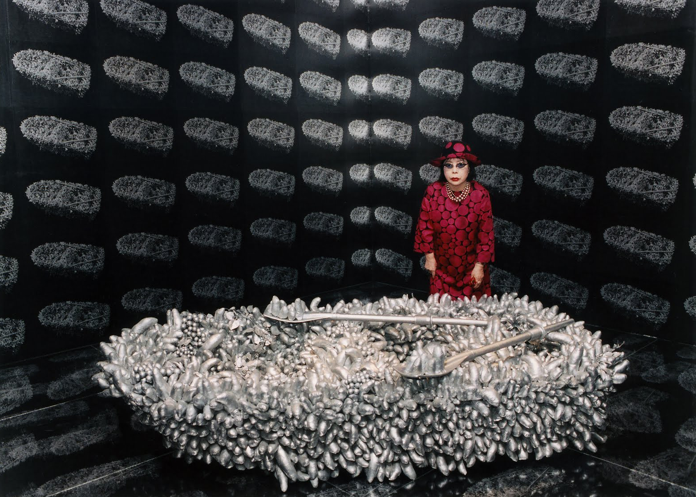
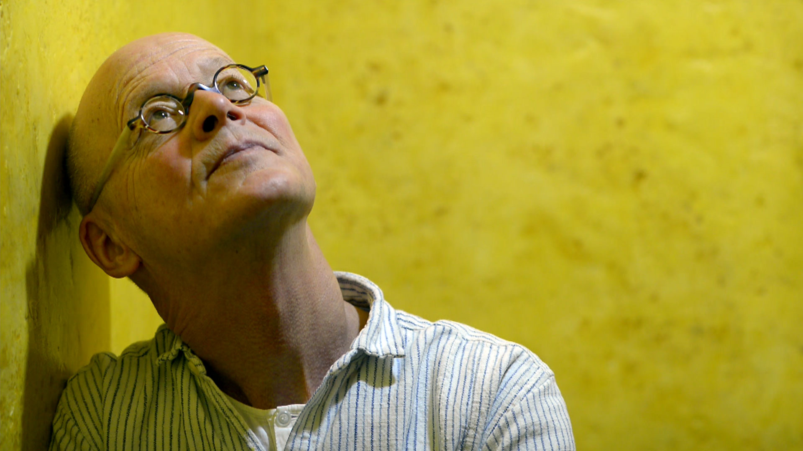
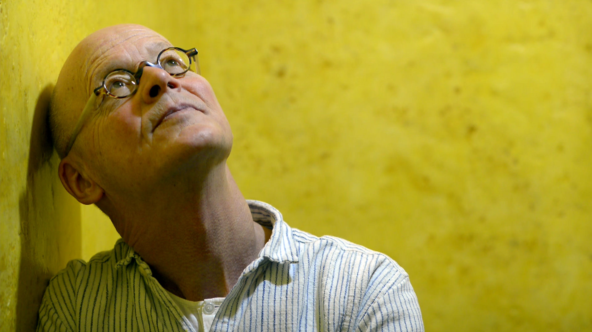
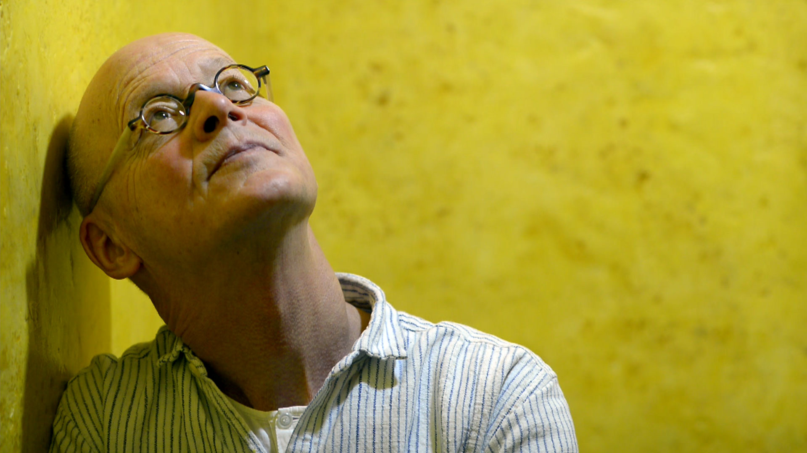
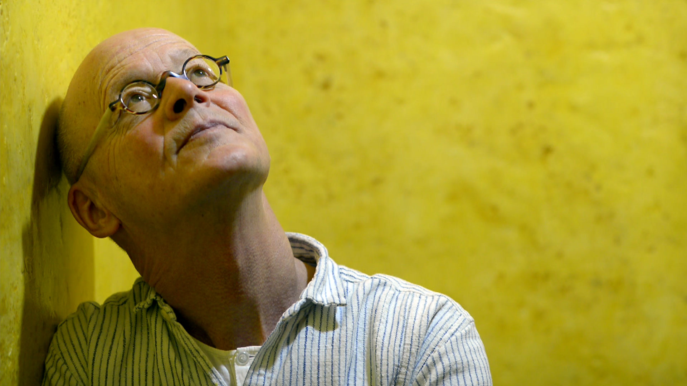

Life as an Artist
-
- Yayoi Kusama
- April 22 at 7:30pm RISD Auditorium
-
- Ralf Hütter_Kraftwerk
- April 23 at 7:30pm RISD Auditorium
-
- Wolfgang Laib
- April 24 at 7:30pm RISD Auditorium

 


Every moment we are creating our experience. Our thoughts, our words, our actions are all instances of our ability to bring forth something in the space where nothing existed before. Life is the canvas, our relationships are the canvas, conversations are the canvas, dreams are the canvas.

Yayoi Kusama is one of the most exciting and prolific artists working today. With a practice encompassing performance, film-making, painting, drawing, sculpture, installation, fashion, poetry, fiction and public spectacles (or 'happenings') over some 60 years, this leading Japanese practitioner has been widely acknowledged as a major influence on several generations of contemporary artists.
Ralf Hütter and Florian Schneider began the Kraftwerk project in Düsseldorf, Germany, in 1970, setting up the pioneering Kling Klang studio, where all of Kraftwerk's albums were conceived and composed. By the mid-1970s the group had achieved international recognition for their revolutionary electro "sound paintings" and their musical experimentation with tapes and synthesizers. Their compositions, which feature distant melodies, multilingual vocals, robotic rhythms, and custom-made vocoders and computer-speech technology, almost single-handedly created the soundtrack for our digital future. Kraftwerk anticipated the impact of technology on art and everyday life, creating sounds and visuals that capture the human condition in the age of mobility and telecommunication. Their innovative looping techniques and computerized rhythms, which had a major influence on the early development of hip-hop and electronic dance music, remain among the most commonly sampled sounds across a wide range of music genres. Furthermore, the use of robotics and other technical innovations in their live performances illustrates Kraftwerk’s belief in the respective contributions of both people and machines in creating art.


Since the mid-1970s, Laib (German, b. 1950) has been producing sculptures and installations marked by a serene presence and a reductive beauty. These works are often made from one or a combination of two materials, accumulated from natural elements—such as milk, marble, pollen, rice, and beeswax—which have been selected for their purity and symbolic associations. Forging a singular path for more than 30 years, Laib amplifies the intrinsic materials and processes found in nature. Laib has stated that “pollen is the potential beginning of the life of the plant. It is as simple, as beautiful, and as complex as this. And of course it has so many meanings. I think everybody who lives knows that pollen is important.”